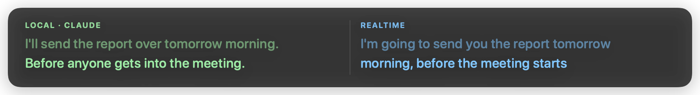

Follow the call, whatever language it's in.
Relay puts live subtitles on your screen, in your language, while the call is happening. It does the same for anything else playing on your Mac.
The subtitles sit above everything, including full-screen video. Drag them anywhere.
For the calls you can only half follow
Half the room switches to Spanish. A client joins from São Paulo. A supplier's English runs out right at the detail you needed. Relay reads whatever is coming out of your speakers, so it works in Zoom, Meet, Teams or anything else, with no bot joining the meeting and nothing for anyone else to notice.
Tells people apart
Each line is tagged with the voice that said it, so a busy call stays readable when two people talk at once.
Keeps up when the language changes
Relay works out what is being spoken as it goes. If the room moves from Spanish to French, the subtitles move with it.
Stays out of the way
Drag the subtitles anywhere on screen. They never take focus, and they stay visible over full-screen apps.
Nine languages, either direction
Spanish, French, German, Italian, Portuguese, Japanese, Korean, Chinese and English. Pick the one you read in.

And anything else your Mac plays
A documentary with no subtitles. A lecture someone sent you. A voice note you have listened to four times and still cannot make out. If it comes out of your speakers, Relay can read it.
Setting it up
-
1
Move Relay to Applications
Relay lives in the menu bar. There is no window to keep track of.
-
2
Paste in a key
Relay translates using your own Anthropic or OpenAI account, so you pay them directly at cost. Your key is kept in the macOS Keychain.
-
3
Press Start listening
macOS asks once for permission to hear your Mac. After that, play something.

Set it up for the way you work
Relay can run two ways, and you can switch between them whenever you like.
Cheap, and it stays on your Mac
Speech becomes text on your own machine, and only the words get sent for translating. Lines appear as each sentence finishes. Costs a few cents an hour.
Instant, streamed live
The audio goes straight to OpenAI, which translates while the person is still mid sentence. The fastest Relay gets, and the most expensive.
| Translating with | Lines appear | Roughly |
|---|---|---|
| OpenAI | End of sentence | 4¢ an hour |
| Claude | End of sentence | 19¢ an hour |
| OpenAI Realtime | Mid sentence | $2.04 an hour |
See both at once
Relay can run two of them on the same audio and give each its own column. Watch how they handle a real call, then keep whichever one you would rather read.
